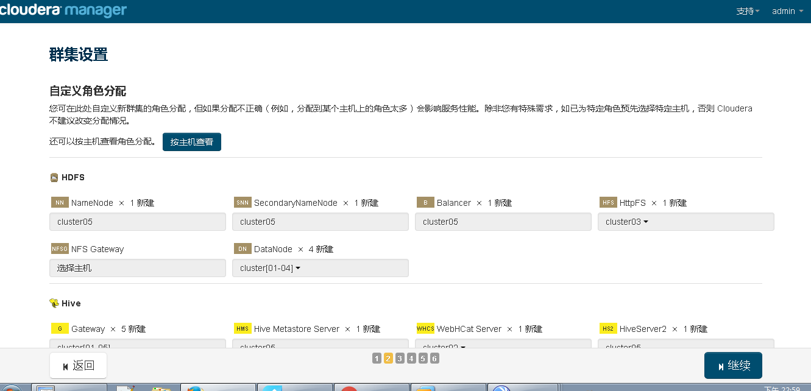
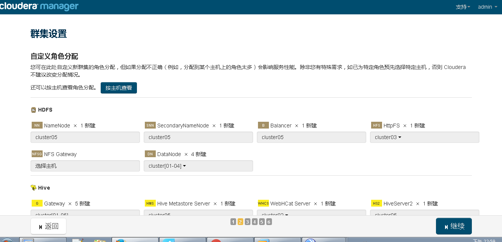

CDH5.5环境搭建
（一） 简介
CDH is the most complete, tested, and popular distribution of Apache Hadoop and related projects. CDH delivers the core elements of Hadoop – scalable storage and distributed computing – along with a Web-based user interface and vital enterprise capabilities. CDH is Apache-licensed open source and is the only Hadoop solution to offer unified batch processing, interactive SQL and interactive search, and role-based access controls

（二） 系统要求以及版本支持
1 操作系统的要求（与RHEL兼容系列）
| Red Hat Enterprise Linux and CentOS, 64-bit |
| 5.10 |
5.7 |
6.4 |
6.5 |
| 6.5 in SE Linux mode |
6.6 |
6.6 in SE Linux mode |
6.7 |
注意：a 如果是RHEL7系列，只支持7.1版本，不支持7.0
b RHEL7.1版本必须是新安装，从低版本升级到7.1是不允许的。
2 JDK版本的要求
| CDH Version Managed |
Minimum Supported JDK Version |
Recommended JDK Version |
| CDH 5 |
1.7.055 |
1.7.067 1.7.075 1.7.080 |
| 1.8.031 官方不建议使用1.8.040 |
1.8.0_60 |
3 浏览器的支持（浏览器是管理员用来安装、配置、管理以及监控服务的交互工具）
火狐（24和31）
Google Chrome(36及更高版本）
IE（9及更高）
Safari（5及更高）
4 对数据库的支持(详见官网)
CM支持多种数据库，关于服务的配置、角色的分配、配置的历史记录以及正在运行的程序等等，Cloudera Manager Server将这些信息都存储在自己的数据库中。
| MariaDB 5.5 | MySQL - 5.1, 5.5 and 5.6 | Oracle 11gR2 and 12c | PostgreSQL - 8.1, 8.3, 8.4, 9.1, 9.2, 9.3, and 9.4 |
注意： 1 当程序重启时，每一个重新部署的服务均从数据库中读取相关信息。如果数据库服务处于异常状态，将导致整个集群无法启动或是出现异常。所以应对数据库进行周期性地备份，以便在数据出现丢失时能够得以恢复。
2 对于选用的数据库，必须配置使其支持UTF8编码
5 系统资源要求
-
磁盘的要求
-
Cloudera Manager Server
- /var所在分区至少5GB
- /usr所在分区至少500MB
-
Cloudera Management Service
- 关于主机的和服务的监控，这些信息都存储在数据库中。所以数据库所在分区（/var）至少保证20GB。更多官方参考
-
Agents
- 对于每一个代理节点，解包下载文件时至少需要三倍的下载文件大小的空间。默认情况解包的路径是 /opt/cloudera/parcels
-
内存要求
- 大多情况下推荐为4GB（对于Oracle数据库而言是必需的）。
- 当然对于少于100个节点，且采用非Oracle数据库时，2GB也是可以的。但此时必需要调低系统最大堆大小（通过修改 /etc/default/cloudera-scm-server 文件中的 -Xmx 参数）
-
Python
- Cloudera Manager 和 CDH 4 要求 Python 2.4及更高版本，但是 CDH5中的Hue及CDH5中的安装包要求 Python 2.6或是2.7.
-
Perl
- Cloudera Manager 也需要perl的支持。
6 网络以及安全要求
集群部署中的每一台机器必需要满足一下网络和安全要求
-
集群中务必有提供DNS服务，并正确配置机器的 /etc/hosts 文件。所有节点必需能够进行域名的正向解析及反向解析。 /etc/hosts 文件应满足一下条件
- 拥有所有节点的域名及IP地址信息
- 不包含大写域名
- 不包含重复IP地址
- 无论是在 hosts文件还是DNS服务中，均不使用别名。
- 多数情况下, Cloudera Manager Server在安装或是升级时，必需能SSH连接集群中的节点。能够通过root账号登录，或是拥有无需密码进行sudo提权的账户。当集群安装完毕时，可以关闭对节点的登录授权。Cloudera Manager Server也不会保有关于SSH的认证信息，并且这些认证信息会自动清除（更多相关信息）
- 必需关闭IPv6
（三）准备工作
1 关闭系统的 Selinux + Iptables （所有节点）
2 定位集群中作为Namenode的节点，配置使其可以免密码登录集群中所有节点
3 修改集群中所有节点的主机名，并同步更新集群中所有节点的hosts文件
4 卸载系统自带OPEN-JDK（所有节点）
-
安装好的Centos系统有时会自动安装OpenJdk，用命令java -version查看：
- java version "1.6.0"
OpenJDK Runtime Environment (build 1.6.0-b09)
OpenJDK 64-Bit Server VM (build 1.6.0-b09, mixed mode)
-
如有上述显示，说明系统里已经有OpenJdk，执行以下命令查看系统中有哪些OpenJdk相关包：
-
其中有如下包必须卸载，根据系统版本不同，各个包版本号会有所差异：
- java-1.5.0-gcj-1.5.0.0-29.1.el6.x86_64
- java-1.6.0-openjdk-1.6.0.0-1.66.1.13.0.el6.x86_64
- java-1.6.0-openjdk-devel-1.6.0.0-1.66.1.13.0.el6.x86_64
-
执行以下命令，卸载：
- rpm -e --nodeps java-1.5.0-gcj-1.5.0.0-29.1.el6.x86_64
- rpm -e --nodeps java-1.6.0-openjdk-1.6.0.0-1.66.1.13.0.el6
- rpm -e --nodeps java-1.6.0-openjdk-devel-1.6.0.0-1.66.1.13.0.el6.x86_64
5 安装JDK（所有节点）
- 从官网下载适合的jdk压缩包，版本根据上面进行选择
- 创建 /usr/java 目录，并将下载的压缩包解压到此路径。
- 创建软连接，如下图所示
- 修改系统环境变量，使jdk生效

6 安装集群内网NTP服务，使所有节点保持时间同步
7 数据库的安装，本次安装采用Mysql
- Mysql的安装不再介绍
- 设置Mysql为开机启动，命令：chkconfig mysqld on
- 此次安装需要创建的数据库如下
3.1 --hive数据库
create database hive DEFAULT CHARSET utf8 COLLATE utf8generalci
3.2 --集群监控数据库
create database amon DEFAULT CHARSET utf8 COLLATE utf8generalci
3.3 --hue数据库
create database oozie DEFAULT CHARSET utf8 COLLATE utf8generalci
- 给用户授权（这里密码设为hadoop）
4.1 grant all on . to root@"%" Identified by "hadoop";
（四）正式安装
一 Cloudera Manager Server 及 Agent 的安装
- 此次安装采用离线安装方式，故提前准备好所需文件。
1.1 官方Parcles下载地址
1.2 Parcels下载目标 CDH-5.5.2-1.cdh5.5.2.p0.4-el6.parcel CDH-5.5.2-1.cdh5.5.2.p0.4-el6.parcel.sha1 manifest.json
1.3 官方CM下载地址
1.4 CM下载目标 cloudera-manager-centos7-cm5.5.2x8664.tar.gz
1.5 下载 mysql 的JDBC 驱动包，此次安装采用 mysql-connector-java-5.1.38-bin.jar
- 完成上一步后，针对cloudera官网的访问通信不再有要求。但是仍然需要连结yum源，以解决后续的依赖问题。
- 将1.4指定的下载文件解压到 /opt 目录下，因为cdh5的源会默认在/opt/cloudera/parcel-repo寻找
-
给所有节点添加cloudera-scm（默认）用户
- 命令： useradd --system --home=/opt/cm-5.5.2/run/cloudera-scm-server --no-create-home --shell=/bin/false --comment "Cloudera SCM User" cloudera-scm
-
修改server_host变量
- 将文件/opt/cm-5.5.2/etc/cloudera-scm-agent/config.ini中这个变量的值修改为 CMS 的主机名
- 将1.5的下载文件复制到 /opt/cm-5.5.2/share/cmf/lib/ 目录中
- 分发 /opt/cm-5.5.2 文件到所有节点
- 为Cloudera Manager 5建立数据库：
8.1 执行命令： /opt/cm-5.5.2/share/cmf/schema/scmpreparedatabase.sh mysql -h localhost -u root -phadoop --scm-host localhost scm scm scm
- 开启Cloudera Manager 5 Server端：
9.1 /opt/cm-5.5.2/etc/init.d/cloudera-scm-server start
9.2 注意 server首次启动不要立即关闭或重启，因为首次启动会自动创建相关表以及数据，如果因为特殊原因中途退出，请先删除所有表以及数据之后再次启动，否则将会出现启动不成功的情况。
- 开启Cloudera Manager 5 Agents端：
10.1 /opt/cm-5.5.2/etc/init.d/cloudera-scm-agent start
浏览器启动Cloudera Manager 5 控制台（默认端口号是7180），启动成功就会看到登陆页面。
默认用户名：admin 密码：admin

二 CDH5.5.2安装
- 制作本地的CDH源
1.1 将 1.2 下载的文件放到master节点的/opt/cloudera/parcel-repo目录下
1.2 修改 后缀文件名为 .sha1 为 .sha
- 开始正式安装CDH到集群，由于 Cloudera Manager 对中文支持很好，下面主要以图片为主
2.1 Cloudera Manager 提供了三种选项，毫无疑问 免费 是我们的首选
2.2 继续之后，就可以看到我们集群中的节点已经准备就绪
2.3 继续之后，Cloudera Manager 会将安装文件分发至各个节点
 2.4 集群处于局域网环境，分发速度还是可以的
2.4 集群处于局域网环境，分发速度还是可以的
 2.5 解压缩Parcels文件
2.6 激活各节点
2.7 进行各节点的健康检查，提示信息也很直观
2.5 解压缩Parcels文件
2.6 激活各节点
2.7 进行各节点的健康检查，提示信息也很直观
2.7.1 对于第一个黄色标示，在各节点执行命令： echo 'vm.swappiness = 0' >> /etc/sysctl.conf ; sysctl -p
2.7.2 对于第二个黄色标示，在各节点执行命令： echo never > /sys/kernel/mm/redhattransparenthugepage/defrag
2.7.3 正确从官方下载 对应版本的 jdk，不会出现第三个标示
2.8 选择安装服务，具体可针对自己的业务需求进行自主选择。
 2.9 根据集群中各节点的配置，Cloudera会给出一个推荐的配置选项，根据具体情况可进行相应修改

2.10 前面已经配置好数据库，此步直接进行测试连接即可
2.9 根据集群中各节点的配置，Cloudera会给出一个推荐的配置选项，根据具体情况可进行相应修改

2.10 前面已经配置好数据库，此步直接进行测试连接即可
 2.11 继续之后便开始安装选定的各个服务，时间稍长，等待即可。
2.11 继续之后便开始安装选定的各个服务，时间稍长，等待即可。

至此，CDH便安装完成 !
三 安装过程问题汇总
1 Q: Cloudera Manager Server 无法启动
A: 数据的引擎是否为 Innodb（注意 这是必须的）。Yum安装的方式默认是不支持的，需要手动编译。具体编译方式不是本文重点，不在此详谈。
2 Q: Cloudera Manager Server 无法检测 Agent信号
A: Agent端的配置文件中是否修改了server_host变量
3 Q: Agent 始终无法正确解析到 Server的7182端口
A: Agent端执行： mv /usr/bin/host /usr/bin/host_bak
4 Q: 
A: 这个问题比较棘手，日志信息价值不大。Cloudera 官方社区也未解决，建议修改 /opt 目录权限为777
5 Q: Hive中关于数据库的问题
A: 一般是缺少相应的jar包，将 JDBC 的jar包复制到 /opt/cloudera/parcels/CDH-5.5.2-1.cdh5.0.0.p0.47/lib/hive/lib/ 目录下即可
6 Q: Yarn服务无法启动
报错信息：
Error found before invoking supervisord: dictionary update sequence element #78 has length1; 2 is required
A:
这个错误是CM的一个bug，解决方法为修改/opt/cm-5.3.0/lib64/cmf/agent/src/cmf/util.py文件。将其中的代码：
pipe = subprocess.Popen(['/bin/bash', '-c', ". %s; %s; env" %(path, command)],stdout=subprocess.PIPE, env=caller_env)
修改为：
pipe = subprocess.Popen(['/bin/bash', '-c', ". %s; %s; env |grep -v { | grep -v }" % (path,command)],stdout=subprocess.PIPE, env=caller_env)
7 Q: 其它未知问题
A: 建议重做系统。当服务经过多次安装后，原本前几步中正常状态的服务很可能会失败，此时建议重做系统。
"人不能两次踏进同一条河流" 同样，具体到每次的安装，环境也不一样。遇到问题，还是多 Google一下吧。百度真的很坑,个人见解